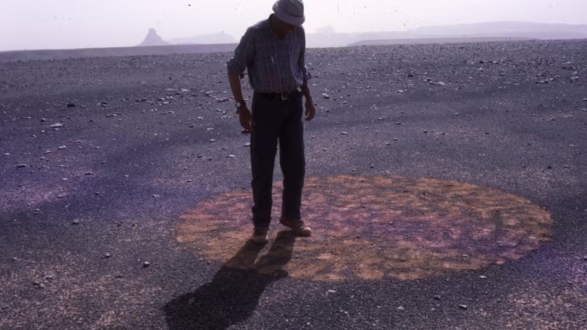

https://francisalys.com/the-green-line/
consulté le 10/03/2024.
Alÿs Francis, The Green Line, Francis Alÿs, 2004,
https://francisalys.com/the-green-line/
consulté le 10/03/2024.
Long Richard, Stones and Flies: Richard Long in the Sahara, Milestones Films: For Individual, Home use only, 1988,

https://milestone.vhx.tv/products/stones-and-flies-richard-long-in-the-sahara
consulté le 10/03/2024.
Bohler Sébastien, Les pensées viennent en marchant, Pour La Science, 2010,
https://www.pourlascience.fr/sd/neurosciences/les-pensees-viennent-en-marchant-10504.php
consulté le 19/02/2024.
Kelberman Dina, I'm Google, [ Dina Kelberman ], 2013,
https://imgoogle.dinakelberman.com/
consulté le 16/03/2024.